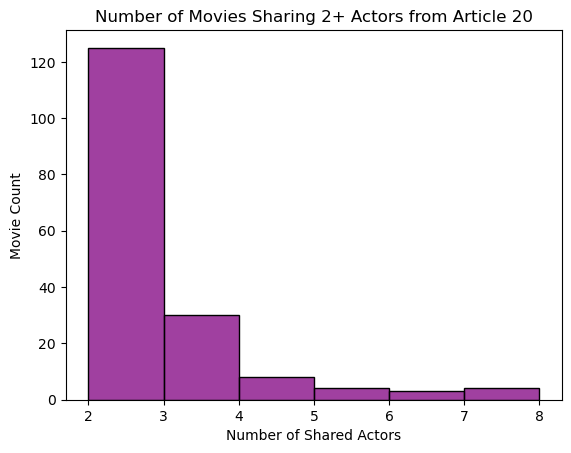

import pandas as pd
import seaborn as snsScraper Overview
In this blog post, I will describe the implementation and application of a movie scraper. The scraper will take in the webpage of a movie on TMDB and for each actor in that movie, the scraper will gather all the other movies and TV shows the actor has participated in, exporting the results to an Excel file. We first import the Pandas and Seaborn packages we will use for data visualization later in the post.
The Spider Class
To implement our scraper, we will need to define a spider class using the Scrapy package that will traverse the webpages and scrape our data. Our spider class, named TmdbSpider, contains three methods that will assist in the scraping. The definition of the class and the following three methods is shown below.
Our first scraping method is the parse method. This method assumes that we are currently on a TMDB movie page, and requests the url of the Full Cast and Crew page. If that page exists, the method calls our next scraping method parse_full_credits to be used on the Full Cast and Crew page.
Our next scraping method is the parse_full_credits. This method assumes that we are on the Full Cast and Crew page, and for each cast member, requests the url to the actor’s TMDB page. Since there may be duplicated urls, we create a dict with keys corresponding to the unique urls in the response. In particular, this function is useful because we only care about the keys, not the values assigned to them in the dict. We turn this back into a list, and now for each actor in that list, we call our final scraping method parse_actor_page to be used on the actor’s TMDB page.
Lastly, we define the parse_actor_page method, to be used on the TMDB page of each actor that participated in our movie. We first request the actor name from the header of the page, and then request all the movies and TV programs that actor has been on. We repeat the process of retrieving only the unique movie and TV titles. Finally, for each movie or TV title, we yield a dictionary giving us the actor name and the movie title, to be exported in an Excel file upon running the scraper.
For each of these three methods, the Scrapy request was formulated by examining the developer tools available for each webpage in the browser and via some experimentation in the interactive Scrapy shell.
# to run
# scrapy crawl tmdb_spider -o movies.csv -a subdir=1147596
import scrapy
class TmdbSpider(scrapy.Spider):
name = 'tmdb_spider'
def __init__(self, subdir="", *args, **kwargs):
self.start_urls = [f"https://www.themoviedb.org/movie/{subdir}/"]
def parse(self, response):
next_page = response.css("p.new_button a").attrib["href"]
if next_page:
next_page = response.urljoin(next_page)
yield scrapy.Request(next_page, callback=self.parse_full_credits)
def parse_full_credits(self, response):
actors = response.css("li[data-order] a::attr(href)").getall()
actors = list(dict.fromkeys(actors))
for actor in actors:
next_page = response.urljoin(actor)
yield scrapy.Request(next_page, callback=self.parse_actor_page)
def parse_actor_page(self, response):
actor_name = response.css("h2.title a::text").get()
projects = response.css("a.tooltip bdi::text").getall()
projects = list(dict.fromkeys(projects))
for title in projects:
yield {"actor": actor_name, "movie_or_TV_name": title}Importing Scraping Results
To build a scraper based on the TmdbSpider, we first have to create a directory from which to run our spider. After completing our .py file containing the class definition, we use the terminal to run the command scrapy crawl tmdb_spider -o movies.csv -a subdir=1147596, which outputs the results of running our scraper on the movie Article 20 (2024) in a file called movies.csv (the subdirectory argument completes the URL for the specific movie we are scraping). Using these results, we wish to find out the number of movies, besides the original input, that the actors have collaborated on. We first read our data into a Pandas dataframe and relabel the column names to something more viewer-friendly.
movies = pd.read_csv("movies.csv")movies["Actor"] = movies["actor"]
movies["Movie/TV Show Name"] = movies["movie_or_TV_name"]
movies = movies.drop(["actor", "movie_or_TV_name"], axis = 1)Data Processing
Our ultimate goal is to give a visualization of the other movies and TV shows the actors of Article 20 have collaborated on. To do this, we first group our data frame by the Movie or TV Show name, and apply the aggregating function len to give the number of Article 20 actors that are also in that movie. We append that column to the Pandas table in a new column labeled “Number of Shared Actors”.
movies = movies.groupby("Movie/TV Show Name")["Actor"].aggregate(len) \
.sort_values(ascending=False).reset_index(name='Number of Shared Actors')
movies| Movie/TV Show Name | Number of Shared Actors | |
|---|---|---|
| 0 | Article 20 | 42 |
| 1 | Full River Red | 8 |
| 2 | Cliff Walkers | 7 |
| 3 | The Detectives' Adventures | 7 |
| 4 | Snipers | 7 |
| ... | ... | ... |
| 990 | Mad House | 1 |
| 991 | Made in Yiwu | 1 |
| 992 | Magic 7 | 1 |
| 993 | Magic Mobile Phone | 1 |
| 994 | 鼓点上的梦 | 1 |
995 rows × 2 columns
Creating a Plot
As we want to quantify the number of other movies that include multiple actors in Article 20, we perform two final transformations. As every actor participated in Article 20 itself, we remove that row from our table, and because we are interested in movies that include multiple target actors, we drop all the rows where the number of shared actors is one. Finally, we use Seaborn to create a bar graph/histogram with the number of shared actors in a movie on the x-axis and the number of movies containing given number of shared actors on the y-axis. For instance, it seems like approximately 30 other movies include exactly three of the Article 20 actors.
movies = movies.drop(0, axis=0)
movies = movies[movies['Number of Shared Actors'] != 1]fig = sns.histplot(movies, x = "Number of Shared Actors", color = "purple", binwidth = 1)
fig.set_ylabel("Movie Count")
fig.set_title("Number of Movies Sharing 2+ Actors from Article 20")Text(0.5, 1.0, 'Number of Movies Sharing 2+ Actors from Article 20')